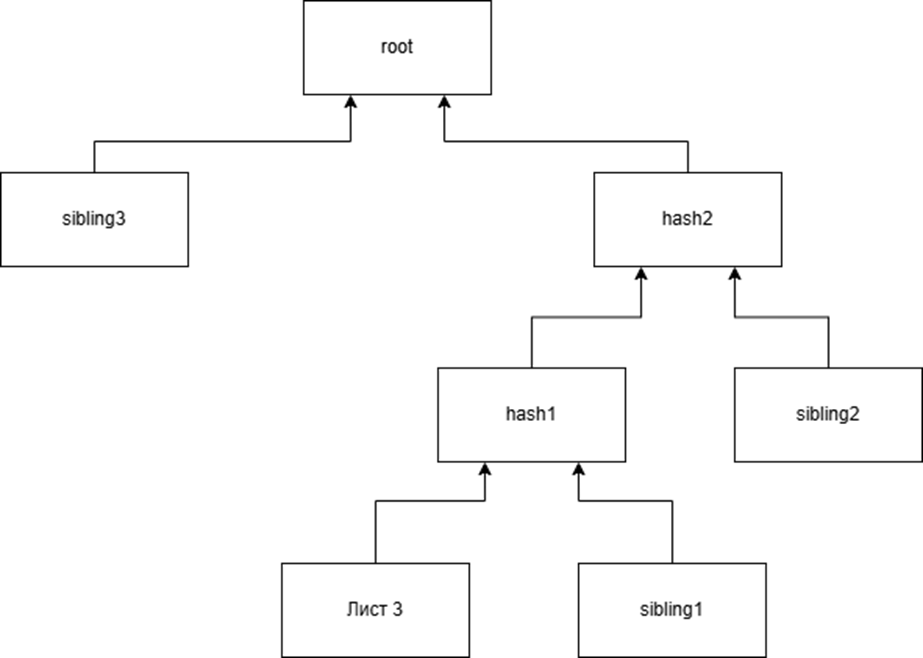
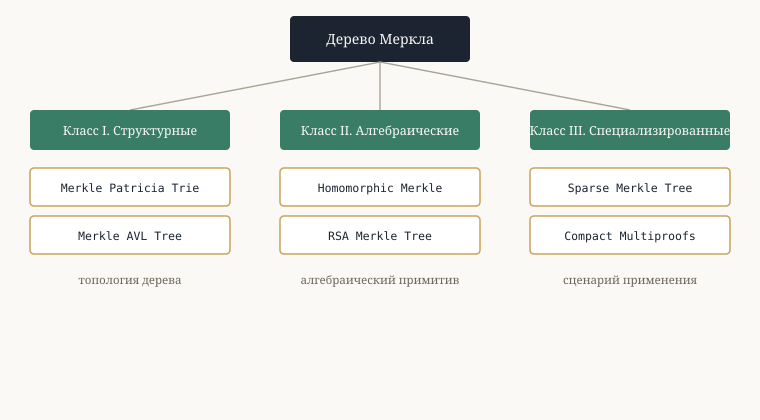

Выполнил студент группы ФИб-2301-52-00 Д.С. Вотинцев
Руководитель к.ф.-м.н., доцент кафедры ПМИ Н.В. Шалагинова
Теория
Криптографическая хэш-функция
Криптографическая хэш-функция — детерминированная функция, отображающая произвольную последовательность битов в выходное значение фиксированной длины (дайджест). Для использования в структурах аутентификации данных функция H должна обладать следующими свойствами:
Дерево Меркла
Пусть D = {d₀, …, dₙ₋₁} — набор из n блоков данных. Классическое дерево Меркла — полное двоичное дерево T = (V, E), построенное на D, в котором листовой узел Lᵢ содержит значение H(dᵢ), а каждый внутренний узел с потомками l и r — значение H(l ∥ r). Единственный узел без родителя — корень Меркла Root(T). Если n не является степенью двойки, дерево дополняется нулевым хэшем H(∅).
Корень Меркла и доказательство включения

Пусть D = {d₀, …, dₙ₋₁} — набор из n блоков данных. Классическое дерево Меркла — полное двоичное дерево T = (V, E), построенное на D, в котором листовой узел Lᵢ содержит значение H(dᵢ), а каждый внутренний узел с потомками l и r — значение H(l ∥ r). Единственный узел без родителя — корень Меркла Root(T). Если n не является степенью двойки, дерево дополняется нулевым хэшем H(∅).
Классификация

Анализ литературы позволяет выделить три принципиально различных направления в развитии дерева Меркла: изменение топологии, замену хэш-функции на алгебраическую структуру и специализацию под конкретный сценарий.
Класс
Структура
Ключевая идея
I. Структурные
Merkle Patricia Trie
Стандарт Ethereum; сжатое radix-дерево для пар «ключ — значение»
I. Структурные
Merkle AVL Tree
Гарантированная O(log n) высота при динамических обновлениях
Узловая функция на основе модульного возведения в степень (RSA)
III. Специализированные
Sparse Merkle Tree
Единственная структура с доказательствами не-включения
III. Специализированные
Compact Merkle Multiproofs
Компактная одновременная верификация нескольких листьев
Реализация выбранных алгоритмов
Все семь структур реализованы на Python 3.12 в едином модуле merkle_benchmark.py, с использованием hashlib (SHA-256), пакета cryptography для параметров RSA, tracemalloc для профилирования памяти и time.perf_counter() для измерения времени.
Classic Merkle Tree
Двоичное хэш-дерево на SHA-256: каждый лист хранит хэш блока данных, каждый внутренний узел — хэш конкатенации потомков. Построение — O(n), обновление листа — O(log n), размер доказательства — O(log n) хэшей.
Merkle Patricia Trie
Объединяет сжатое radix-дерево (Patricia Trie) с хэш-аннотацией узлов. Три типа узлов: Leaf, Extension, Branch (16 слотов). Вставка и поиск по ключу длиной k выполняются за O(k); используется в Ethereum для state, storage и receipts trie.
Merkle AVL Tree
Самобалансирующееся BST-дерево, дополненное хэшами Меркла и высотой узла. Балансировочные вращения гарантируют высоту не более 1.44·log₂ n, что даёт стабильно малый размер доказательства.
Homomorphic Merkle Tree
Хэш листа вычисляется как gᴴ⁽ᵈ⁾ mod p в мультипликативной группе (ℤ/pℤ)* (1024-битный модуль, RFC 5114). Благодаря коммутативности умножения корень при изменении одного листа пересчитывается за O(1) групповых операций — без обхода дерева.
RSA Merkle Tree
Узловая функция заменена на модульное возведение в степень: H(x) = SHA256_int(x)ᵉ mod N. Корень может быть подписан приватным ключом RSA, что связывает Merkle-структуру с инфраструктурой открытых ключей (PKI).
Sparse Merkle Tree
Дерево фиксированной глубины 256, охватывающее всё адресное пространство ключей; пустые листья получают предвычисленный нулевой хэш. Единственная из рассмотренных структур, поддерживающая доказательства не-включения (non-membership proof) — применяется в протоколах Semaphore и Aztec Protocol.
Compact Merkle Multiproofs
Компактное доказательство для набора индексов листьев: исключаются «братские» хэши, восстановимые из других элементов пруфа. Используется в спецификации Ethereum Beacon Chain SSZ для верификации пакетов подписей.
Бенчмарк и анализ результатов
Каждый тест запускался 200 раз с независимыми случайными наборами данных объёмом n = 10, 50 и 200 элементов (32-байтные блоки, os.urandom(32)); результаты усреднены.
Алгоритм
n = 10
n = 50
n = 200
Classic Merkle Tree
0.288 ±0.686
1.391 ±3.404
2.815 ±1.704
Merkle Patricia Trie
0.288 ±0.187
1.935 ±1.199
11.217 ±13.675
Merkle AVL Tree
0.839 ±0.853
6.033 ±1.794
32.262 ±7.817
Homomorphic Merkle
34.589 ±16.817
164.937 ±27.821
676.840 ±68.383
RSA Merkle Tree
20.048 ±5.217
38.282 ±10.543
110.779 ±23.252
Sparse Merkle Tree
23.876 ±8.837
115.386 ±27.866
463.612 ±61.851
Compact Multiproofs
0.269 ±0.290
0.887 ±0.444
3.425 ±1.339
По времени построения лидирует Classic Merkle Tree (0.288–2.815 мс), вплотную примыкают Compact Merkle Multiproofs. Homomorphic Merkle достигает 676.840 мс при n=200 — примерно в 240 раз медленнее классического дерева из-за тяжёлых модульных вычислений. По размеру доказательства наиболее компактны MPT (64–96 Б) и Classic Merkle Tree (128–256 Б); Sparse Merkle Tree даёт фиксированный размер 8192 Б — плата за возможность доказательства не-включения. Compact Multiproofs при n=200 (k=50 листьев) дают экономию ×5.8 относительно суммы одиночных доказательств.
Выводы и рекомендации по применению
Приоритет скорости и минимальной памяти
Classic Merkle Tree (SHA-256) — лучшее время построения, детерминированная память, логарифмически малый размер доказательства. Подходит для блокчейн-приложений и контроля целостности файлов.
Частые обновления, работа с парами ключ — значение
Merkle Patricia Trie — компактные доказательства (64–96 Б), эффективная работа с ключами произвольной длины; используется в Ethereum для хранения состояния.
Динамические наборы с упорядоченными ключами
Merkle AVL Tree — гарантированная O(log n) высота благодаря балансировке, самая быстрая генерация доказательств (0.009–0.023 мс).
Доказательства не-включения
Sparse Merkle Tree — единственная структура со 100%-успешными non-membership proof; плата — фиксированный размер доказательства 8192 Б.
Гомоморфные свойства и агрегация
Homomorphic Merkle Tree — O(1)-обновление корня; практична при наличии аппаратного ускорения модульной арифметики.
Пакетная верификация нескольких листьев
Compact Merkle Multiproofs — экономия размера доказательства до ×5.8 при k=50 листьях; не поддерживает одиночное обновление.
Заключение
В ходе выполнения курсового проекта проведено сравнительное исследование классического дерева Меркла и шести его модификаций. Все семь алгоритмов реализованы на Python и протестированы при трёх объёмах входных данных в 200 независимых прогонах. Перспективами дальнейшего исследования являются тестирование на реальных блокчейн-наборах данных, оптимизации на основе параллельных вычислений и анализ применимости рассмотренных структур в схемах доказательств с нулевым разглашением (ZKP).